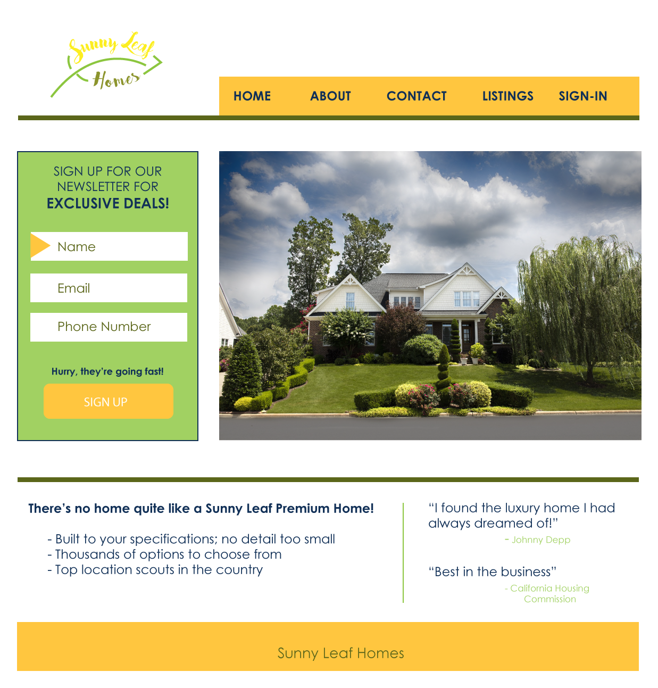

Presentation 8: Conversion

Design Choices
I wanted the design to be simple, and based my color scheme off of both the name of
the company (logo aswell) and the main image I wanted to use.
-
Encapsilation: Because I wanted the sign up to be the most important part
of the homepage I put it close to the top, close to the logo and nav bar. There is
minimal information on the home page which makes the sign up stand out.
-
Contrast: The green of the sign-in background contrasts well with the
yellow button, and with the white background. The plain box also contrasts
well with the detailed house image on the right.
-
Directional Cues: The yellow arrow by name attracts the eye through color and shape, and
points to the first thing to be filled in on the form.
-
Urgency/Scarcity: The "Hurry, they're going fast!" above the sign up button
creates a sense of urgency, that they will be missing out on the exclusive deals (which I bolded) above.
-
Social Proof: The testimonies of a celebrity and a housing authority give the viewer something
to base their decision off of. The housing authority makes them look official, and the celebrity
testimony can allow for the viewer to associate the company with high class or standing.